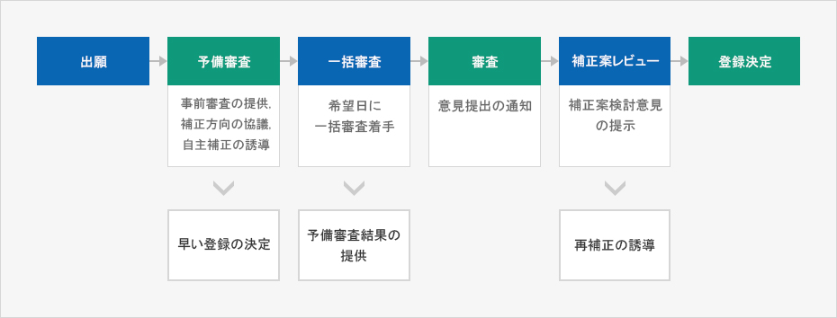
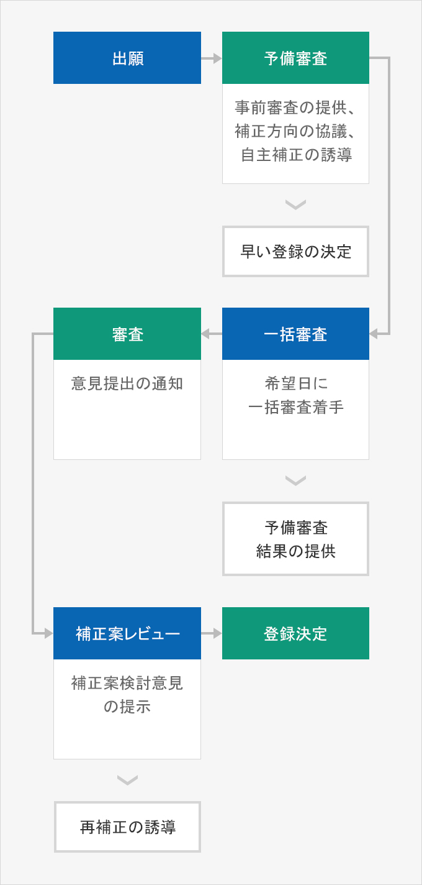

特許庁の主なサービス
- Home
- 経営・生活
- 知的財産権
- 特許庁の主なサービス
第4次産業革命などにより、技術革新と知的財産政策が国家戦略の中核となっている今、韓国の特許庁は、信頼される審査、審判サービスの提供、強力な特許創出支援と保護強化、優秀知的財産の事業化促進に加え、関連人材養成及び対国民サービスの改善政策などを推進している。
オーダーメイド型3トラック特許審査制度
特許庁は、知的財産権の審査処理期間及び審査品質に対して競争力のあるサービスを提供するために優先審査、一般審査、遅い審査で構成されたオーダーメイド型3トラック特許審査制度を運営している。これを通じて迅速に特許権を獲得し、独占的地位を先取りすることができ、遅い審査を通じて十分な事業化の時間を確保することもできるため、必要に応じて審査期間が調整できるというメリットがある。
- 優先審査 : 専門機関に先行技術調査を依頼し、優先審査出願の処理期間を調整
- 一般審査 : 平均審査所要期間以内に審査結果を提供
- 遅い審査 : 遅い審査を希望する顧客のために審査猶予申請制度を導入
特許審査3.0
従来の一方向(One-Way)サービスから脱却し、特許審査の全過程に渡って出願人と審査官がコミュニケーションしながら高品質の特許をともに作っていく新しい審査のパラダイムで、予備審査、一括審査、補正案レビューの段階がある。
審査段階別の主な制度



- 出願
- 予備審査 : 事前審査の提供、補正方向の協議、自主補正の誘導 -> 早い登録の決定
- 一括審査 : 希望日に一括審査着手 -> 予備審査結果の提供
- 審査 : 意見提出の通知
- 補正案レビュー : 補正案検討意見の提示 -> 再補正の誘導
- 登録決定